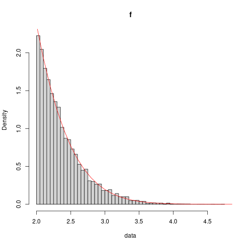
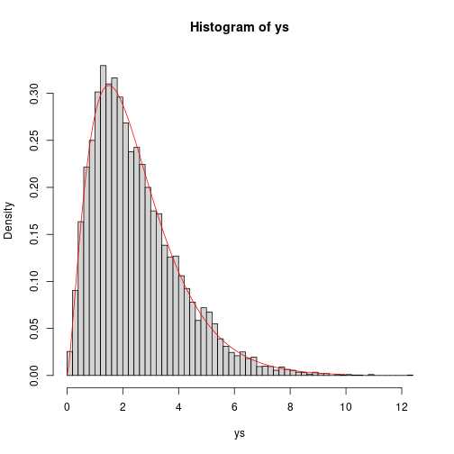

Computational Statistics - SIUe - STAT 575 - Exam 1
Alex Towell (lex@metafunctor.com)
Problem 1
Part (1) (10 points)
$$ f(x) ∝ e^{-x^2/2}I(x > 2). $$Consider the proposed distribution $g(x) = 2 e^{−2(x−2)}I(x > 2)$.
Part (a)
Sample from $g$ using inverse-transform method.
Solution
$$ \begin{align*} G(x) &= P(X \leq x)\\ &= P(2+S \leq x)\\ &= P(S \leq x-2)\\ &= F_S(x-2)\\ &= &= I(x > 2)(1 - \exp(-2(x-2))). \end{align*} $$As a quick proof that $G$ is the cdf of $g$, note that $dG/dx = g$.
$$ \begin{align*} G(x) &= \int_{-\infty}^{x} g(s) ds\\ &= I(x > 2) \int_{2}^{x} 2 e^{−2(s−2)} ds\\ &= I(x > 2) e^4 \int_{2}^{x} 2 e^{−2 s} ds\\ &= -I(x > 2) e^4 \int_{2}^{x} (-2) e^{−2 s} ds\\ &= -I(x > 2) e^4 \left(e^{-2 s}|_2^x\right)\\ &= -I(x > 2) e^4 \left(e^{-2 x}-e^{-4}\right)\\ &= I(x > 2) (1 - e^4 e^{-2 x})\\ &= I(x > 2) (1 - e^{-2(x-2)}), \end{align*} $$$$ \begin{align*} u &= G(x)\\ u &= 1 - e^{-2(x-2)}\\ 1-u &= e^{-2(x-2)}\\ \log(1-u) &= -2(x-2)\\ -\frac{1}{2}\log(1-u) &= x-2, \end{align*} $$$$ x = -\frac{1}{2}\log(1-u) + 2 $$$$ X = -\frac{1}{2}\log(1-U) + 2 $$is a random variable whose density is $g$.
Part (b)
Use accept-reject algorithm to generate a sample of $10000$ from f. Choose a $c$ so that $f(y)/[c g(y)] ≤ 1$. Verify the generated sample via a plot of the true normalized density, and a histogram of the generated values.
Solution
$$ \frac{k(y)}{g(y)} \leq 1 $$$$ y^* = \argmax_y k(y)/g(y) $$and then let $c = k(y^)/g(y^)$.
$$ h(y) = k(y)/g(y) = \frac{e^{-y^2/2}}{2e^{-2(y-2)}}. $$$$ \log h(y) = \log \frac{e^{-y^2/2}}{2e^{-2(y-2)}} = -\frac{1}{2}y^2 + 2(y-2). $$$$ \begin{align*} c = h(2) &= \frac{k(2)}{g(2)}\\ &= \frac{1}{2e^2}. \end{align*} $$$$ u \leq \frac{k(y)}{g(y)} = e^{-(y-2)^2/2}. $$Here is the code that implements our sampling method for $f$ using acceptance-rejection sampling:
# the proposed density we can easily sample from
g <- function(y)
{
2*exp(-2*(y-2))
}
# inverse transform method for sampling from g
rg <- function(n)
{
-0.5*log(1-runif(n))+2
}
rf <- function(n)
{
data <- vector(length=n)
for (i in 1:n)
{
repeat
{
y <- rg(1)
u <- runif(1)
if (runif(1) <= exp(-(y-2)^2/2))
{
data[i] <- y
break
}
}
}
data
}
k <- function(y)
{
exp(-y^2/2)
}
f <- function(y)
{
# normalizing constant
Z <- 17.5358
Z*k(y)
}
To verify the sampling method, we drawn $n=10000$ samples from $f$ and plot its histogram along with a plot of its density function $f$.
data <- rf(10000)
ys <- seq(2,10,by=.1)
hist(data,freq=F,breaks=50,main="f")
lines(x=ys,f(ys),col="red")

The histogram seems compatible with the pdf $f$.
Problem 2 (5 points)
Implement your accept-reject algorithm to get a sample of 10000 from $\mathrm{Gamma}(2.5, 1)$. Verify that your method works via a plot of the true normalized density, and a histogram of the generated values.
Solution
This is not the approach you were looking for, but on the test I did poorly on this section.
Be that as it may, here is essentially my answer on the test, except that the solution is so slow that I decreased $c$ so that, at the extreme tail of the distribution, $f(y) / c g(y) > 1$.
alpha <- 2.5
n <- 10000
c <- 10
a <- floor(alpha)
b <- a / alpha
ys <- vector(length=n)
for (i in 1:n)
{
repeat
{
y <- rgamma(n=1,shape=a,scale=b)
u <- runif(1)
P <- dgamma(y,shape=alpha,scale=1) / (c*dgamma(y,shape=a,scale=b))
if (u < P)
{
ys[i] <- y
break
}
}
}
hist(ys,freq=F,breaks=50)
lines(x=seq(.01,10,by=.05),y=dgamma(seq(.01,10,by=.05),shape=alpha,scale=1),col="red")

Problem 3 (30 points)
Considers $197$ animals randomly divided into four categories (four phenotypes) as follows: $X = (x1, x2, x3, x4)^T$ with cell probabilities $(1/2 + θ/4,(1 − θ)/4,(1 − θ)/4, θ/4)^T$. We observe $X = (125, 18, 20, 34)^T$.
Part (a)
Hand code your algorithm using Newton-Ralphson to find the maximum likelihood estimator of $θ$ directly from the observed likelihood. Compare your result with what you get using the built-in $\mathrm{optim}()$ function in R.
Solution
$$ \ell(\theta | \vec{x}) = x_1 \log\left(\frac{1}{2}+\frac{\theta}{4}\right) + x_2 \log\left(\frac{1-\theta}{4}\right) + x_3 \log\left(\frac{1-\theta}{4}\right) + x_4 \log\left(\frac{\theta}{4}\right). $$$$ \theta^{(t+1)} = \theta^{(t)} - \frac{d \ell / d \theta}{d^2 \ell / d \theta^2} $$$$ \frac{d \ell}{d \theta} = \frac{x_1}{\theta+2} + \frac{x_2}{\theta-1} + \frac{x_3}{\theta-1} + \frac{x_4}{\theta} $$$$ \frac{d^2 \ell}{d \theta^2} = -\frac{x_1}{(\theta+2)^2} - \frac{x_2}{(\theta-1)^2} - \frac{x_3}{(\theta-1)^2} - \frac{x_4}{\theta^2}. $$Instead of taking the time to simplify this expression, we will just substitute these derivations into the updating equation in the following R code:
l1 <- function(theta,x)
{
x[1]/(theta+2) + (x[2]+x[3])/(theta-1) + x[4]/theta
}
l2 <- function(theta,x)
{
-x[1]/(theta+2)^2 - (x[2]+x[3])/(theta-1)^2 - x[4]/theta^2
}
theta_mle <- function(x, start = 0.5, eps = 1e-6)
{
i <- 0
theta0 <- start
theta1 <- NULL
repeat
{
theta1 <- theta0 - l1(theta0,x) / l2(theta0,x)
if (abs(theta1-theta0) < eps) { break }
theta0 <- theta1
i <- i + 1
}
list(mle=theta1,iterations=i)
}
We invoke the updating equations on the given data to estimate $\theta$ with the following R code:
# observed data
x <-c(125, 18, 20, 34)
sol <- theta_mle(x=x, start=0.5, eps=1e-6)
mle <- sol$mle
mle_iterations <- sol$iterations
We see that the MLE converges to a solution around $0.6268215$ after $3$. We compare this result with the built-in procedure, $\rm{optim}$:
# the function to maximize, the log-likelihood function
loglike <- function(theta)
{
x[1]*log(0.5+theta/4) + x[2]*log(0.25*(1-theta)) + x[3]*log(0.25*(1-theta)) + x[4]*log(0.25*theta)
}
# since optim finds the value that minimizes the function, we provide it with
# the negative of the log-likelihood.
optim(0.5,function(theta) { -loglike(theta) },lower=0.1,upper=0.9,method="L-BFGS-B")$par
## [1] 0.626821
The value $\mathrm{optim}$ found is approximately the same. It was fussy with explicitly providing upper and lower bounds. This warrants further investigation, but for another time.
Part (b)
Implement the E-M algorithm to find the the maximum likelihood estimator of $θ$ with the ``augmented’’ data with missing information $Z = y_2$. Compare your result with part (a).
Solution
$$ \vec{y} = (y_1, y_2, y_3, y_4, y_5)^T $$with cell probabilities $(1/2, θ/4,(1 − θ)/4,(1 − θ)/4, θ/4)^T$.
$$ f(\vec{y}|\theta) \propto \prod_{i=1}^{5} \pi_i(\theta)^{y_i} $$$$ \vec{\pi}(\theta) = (1/2, θ/4,(1 − θ)/4,(1 − θ)/4, θ/4)^T. $$$$ \log f(\vec{y} | \theta) = \sum_{i=1}^{5} y_i \log \pi_i(\theta) $$$$ \log f(\vec{y} | \theta) = k(\vec{y}) + y_2 \log(\theta) + y_3 \log(1-\theta) + y_4 \log(1-\theta) + y_5 \log \theta. $$E-step
$$ Q(\theta|\theta^{(t)}) = E_{Z|\vec{x},\theta^{(t)}}(\log f(\vec{y}|\theta)), $$$$ Q(\theta|\theta^{(t)})= E_{Z|\vec{x},|\theta^{(t)}}\left(y_2 \log(\theta) + y_3 \log(1-\theta) + y_4 \log(1-\theta) + y_5 \log \theta\right) $$$$ \begin{split} Q(\theta|\theta^{(t)}) = E_{Z|\vec{x},|\theta^{(t)}}(y_2) & \log(\theta) + E_{Z|\vec{x},|\theta^{(t)}}(y_3) \log(1-\theta) +\\ & E_{Z|\vec{x},|\theta^{(t)}}(y_4) \log(1-\theta) + E_{Z|\vec{x},|\theta^{(t)}}(y_5) \log \theta. \end{split} $$$$ E_{Z|\vec{x}}(y_3) = x_2. $$$$ Z | (\vec{x},\theta^{(t)}) \sim \rm{BIN}(x_1, \frac{\theta^{(t)}}{2+\theta^{(t)}}). $$$$ E_{Z|\vec{x},|\theta^{(t)}}(y_2) = \frac{x_1 \theta^{(t)}}{2+\theta^{(t)}}. $$$$ Q(\theta|\theta^{(t)}) = \frac{x_1 \theta^{(t)}}{2+\theta^{(t)}} \log(\theta) + x_2 \log(1-\theta) + x_3 \log(1-\theta) + x_4 \log \theta. $$M-step
$$ \theta^{(t+1)} = \argmax_{\theta} Q(\theta|\theta^{(t)}), $$$$ \frac{d Q(\theta|\theta^{(t)})}{d \theta}\biggr|_{\theta = \theta^{(t+1)}} = 0. $$$$ \frac{d Q}{d \theta} = \frac{125 \theta^{(t)}}{2+\theta^{(t)}} - \frac{38}{1-\theta} - \frac{34}{\theta} = 0 $$$$ \theta^{(t+1)} = \frac{159 \theta^{(t)} + 68}{197 \theta^{(t)} + 144}. $$$$ \hat\theta_{\mathrm{EM}} = \lim_n \theta^{(t)}. $$We implement the EM algorithm in the following R code:
theta0 <- .5
theta1 <- NULL
i <- 1
repeat
{
theta1 <- (159*theta0 + 68)/(197*theta0 + 144)
cat("theta[",i,"] = ", theta1,"\n")
if (abs(theta1-theta0) < 1e-6) { break }
theta0 <- theta1
i <- i + 1
}
## theta[ 1 ] = 0.6082474
## theta[ 2 ] = 0.6243211
## theta[ 3 ] = 0.6264889
## theta[ 4 ] = 0.6267773
## theta[ 5 ] = 0.6268156
## theta[ 6 ] = 0.6268207
## theta[ 7 ] = 0.6268214
print(theta1)
## [1] 0.6268214
We see the standard MLE $\hat\theta_{\rm{mle}}$ and $\hat\theta_{\rm{EM}}$ both obtain the same solution up to $6$ decimal places when using the same starting value and stopping condition. However, $\hat\theta_{\rm{EM}}$ required more iterations before convergence, which was expected given that the EM algorithm is of linear order while the MLE using Newton-raphson is of quadratic order. However, the EM algorithm does have the benefit of a less complex updating equation.
Part (c)
Find the standard error of the MLE using either a numerical calculation of the inverse of the observed fisher’s information, i.e $[−l”(ˆθ)]^{−1}$, or using Louis’ Method.
Solution
We already have the second derivative of the log-likelihood, so we choose to use the observed Fisher information evaluated at $\theta = \theta_{\rm{mle}}$.
obs_fisher <- -l2(mle,x)
var_mle <- 1 / obs_fisher
sqrt(var_mle)
## [1] 0.05146735
We see that an estimate of standard error of the MLE is $\mathrm{sd}(\hat{\theta}_{\rm{mle}}) = 0.0514673$.
Problem 4 (10 points )
Consider the density $f(x) ∝ 3e^{−0.5(x+2)^2} + 7e^{−0.5(x−2)^2}$ (problems 6, Homework 1).
Part (a)
Compute the exact normalizing constant, both in closed form using $\pi$ (pencil and paper), and also to 5 decimal places (by evaluating the exact version in R).
Solution
$$ f(x) \propto \ker(x) $$$$ \rm{ker}(x) = 3 e^{-0.5(x+2)^2} + 7 e^{-0.5(x-2)^2} $$$$ \int_{-\infty}^{\infty} \frac{1}{C} \ker(x) dx = 1. $$$$ C = \int_{-\infty}^{\infty} 3 e^{-0.5(x+2)^2} dx + \int_{-\infty}^{\infty} 7 e^{-0.5(x-2)^2} dx. $$$$ C = 3 \sqrt{2 \pi} \int_{-\infty}^{\infty} \frac{e^{-0.5(x+2)^2}}{\sqrt{2 \pi}} dx + 7 \sqrt{2 \pi} \int_{-\infty}^{\infty} \frac{e^{-0.5(x-2)^2}}{\sqrt{2 \pi}} dx $$$$ C = 3 \sqrt{2 \pi} \int_{-\infty}^{\infty} \phi(x+2) dx + 7 \sqrt{2 \pi} \int_{-\infty}^{\infty} \phi(x-2) dx. $$$$ C = 3 \sqrt{2 \pi} + 7 \sqrt{2 \pi} = 10 \sqrt{2 \pi} $$is the normalizing constant, which is 25.06628 to $5$ decimal places.
Using R’s numerical integrator, we get the result:
C <- 10*sqrt(2*pi)
ker <- function(x) { 3*exp(-0.5*(x+2)^2) + 7*exp(-0.5*(x-2)^2) }
res <- integrate(ker,lower = -Inf, upper = Inf)
print(res)
## 25.06628 with absolute error < 4e-05
Part (b)
Approximate this integral with a Simpson’s rule to three decimal places. What is the effective range and number of subintervals required?
Solution
Simpson’s rule is implemented by the following R code. Note that we did not bother to optimize it.
# simpson : numerical integrator applying simpson's rule to n subintervals
# over the range (a,b).
#
# arguments;
# f : the function to integrate
# a : the lower-bound
# b : the upper-bound. (a,b) together discrete the range.
# n : the number of subintervals to partition the range
#
# we evenly partition the range into n subintervals of size (b-a)/n
# and apply simson's rule to each subinterval. then, we accumulate these
# values and return the result.
simpson <- function(f, a, b, n)
{
h <- (b-a)/n
s <- 0
x <- a
for (i in 1:(n/2))
{
s <- s + f(x) + 4 * f(x+h) + f(x+2*h)
x <- x + 2*h
}
s*h/3
}
To test effective range and subintervals, we decided to make a program that exhaustively searches for the minimum range and number of subintervals over a discrete set of points. In particular, we search for a range of the form $(-r,r)$ that is symmetric and an even $n$. It is not perfect, but it seems like a reasonable way to estimate these requirements.
Here is the R code:
R <- NULL
N <- NULL
found <- F
for (r in 1:200)
{
for (n in 1:100)
{
res <- simpson(ker,-r/10,r/10,2*n)
if (abs(res - C) < 0.001)
{
R <- r/10
N <- 2*n
cat("r = +-", R, ", n = ", N, ", C = ", res, "\n")
found <- T
break
}
}
if (found) { break }
}
## r = +- 5.9 , n = 16 , C = 25.06603
The minimum range $(-r,r)$, $r > 0$, when divided into $n$ subintervals, that is the same as the true value $10 \sqrt{2\pi}$ to $3$ decimal places is given by $r = 5.9$ and $n = 16$.